图形分割是把一个图形分成若干个小图形，这些小图形有可能形状大小不一样，也有可能形状大小一样。经常见到的是把一个图形分割成几个目标图形，或者把一个图形等分。图形的分割需要有比较强的空间想象能力。在实际操作过程中，家长不妨陪孩子用剪刀剪开图形看看，这样既能增强孩子的动手能力，又能促进孩子建立空间图形概念。
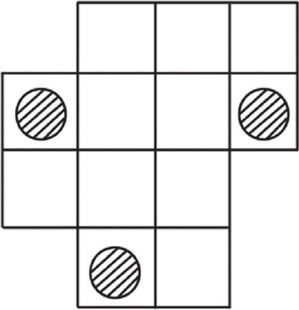
典型例题 1 请在下面的图形中画一条线，画在哪里能把原来的图形分成2个大小、形状都一样的三角形呢？
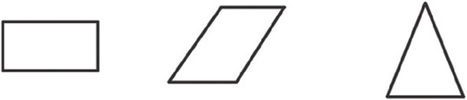
下图中所示的虚线可以把长方形分成2个一样的三角形。
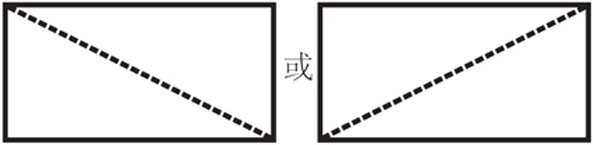
下图中所示的虚线可以把平行四边形分成2个一样的三角形。
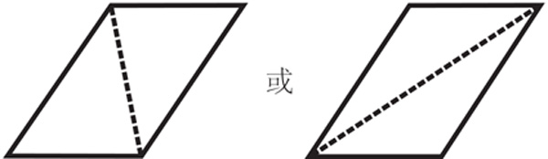
下图中所示的虚线可以把三角形分成2个一样的三角形。
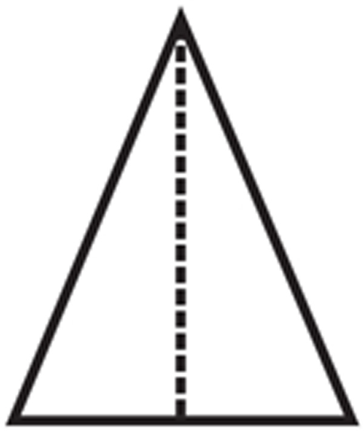
典型例题 2 想办法将下面的图形分成几个大小、形状相同的图形，使每个图形中都有一个五角星。
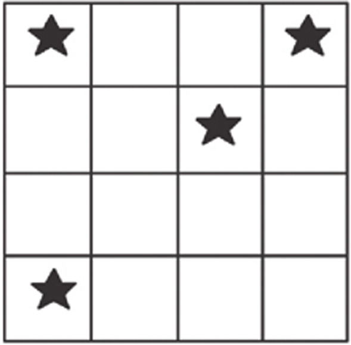
根据题目知道，图形中有4个五角星，所以要把原图形分成4个图形，原图形中一共有16个正方形，所以划分后的每个图形中应该有4个正方形。先划分右上角的五角星，只有一种分法符合条件。
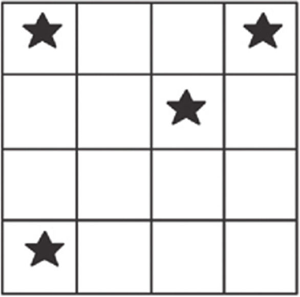
根据这样的形状，把其他部分也划分出来，效果如下图。
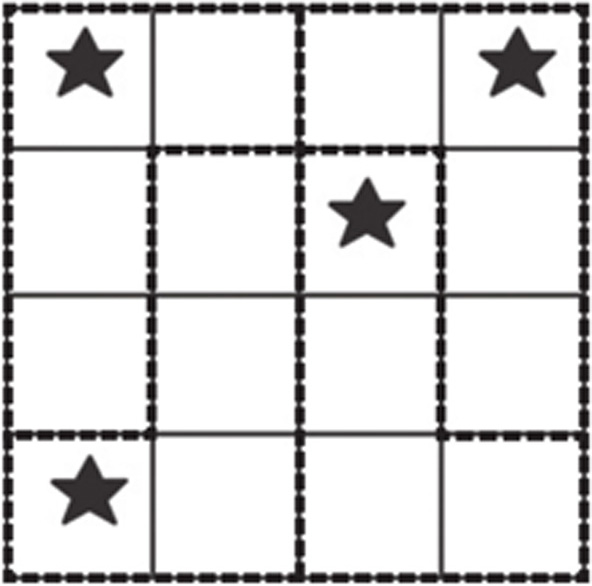
典型例题 3 一块蛋糕上有6颗樱桃，如何切3刀，才能把蛋糕切成6块，且每块上都有1颗樱桃？
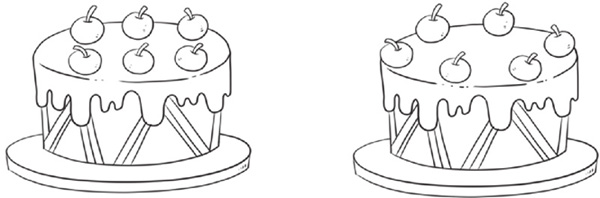
解题策略
由于题目并没有要求要把蛋糕等分，所以上图中2种布局的樱桃，切的方法也不一样。第1种樱桃布局可以按照下图所示的方式切割。
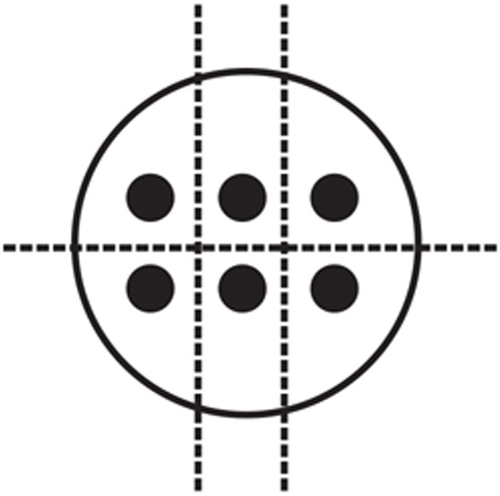
第2种樱桃布局可以按照下图所示的2种方式切割。
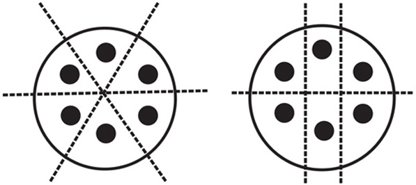
1.请在下面的图形中画一条线，把原图形分成2个三角形。
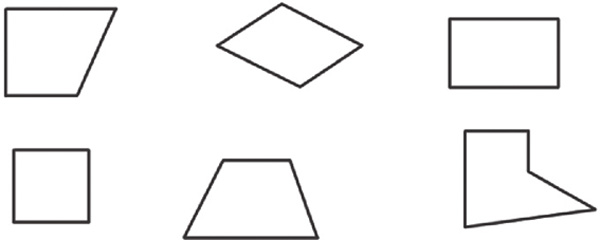
2.你能把下面的圆形和三角形等分为3个大小、形状相同的图形吗？
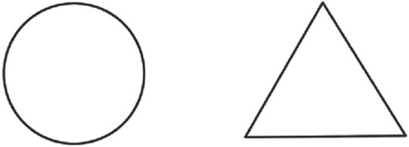
3.你能把下面的三角形分别分成形状、大小相同的2个、4个、6个三角形吗？
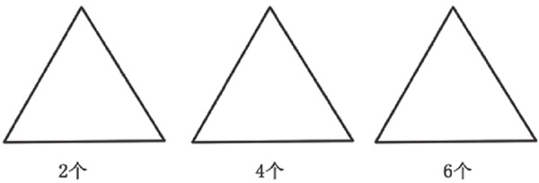
4.右图中有5只鸡，你能用一个正方形把他们相互隔开吗？
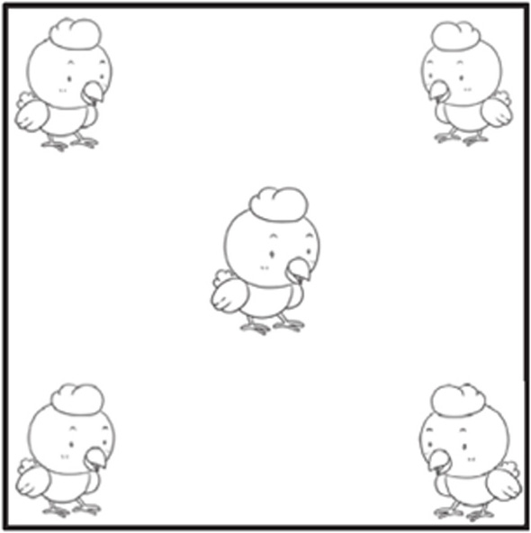
5.把下图分成大小、形状都相同的3部分，每部分要包括一个圆圈，应该怎么分？
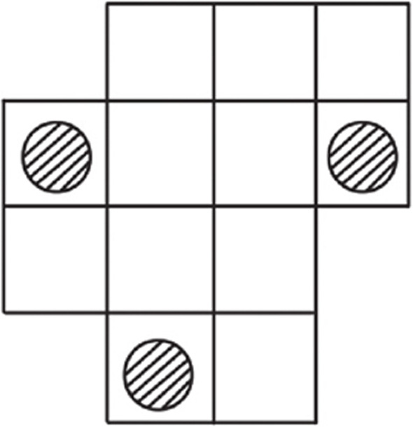
6.一块圆形蛋糕，切3刀，可以切成几块？
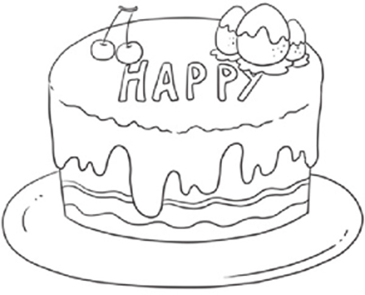
7.下面的蛋糕上有9颗草莓，你能画2条线，将蛋糕分成3块，并且每块蛋糕上有3颗草莓吗？
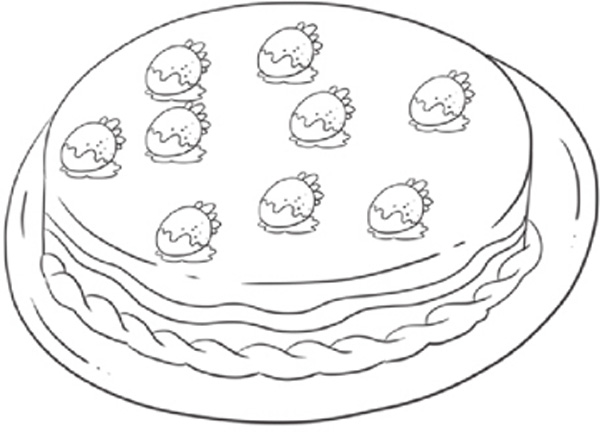
8.下面的蛋糕上有7朵花，你能只切3次，把它分成7块吗？每块上都要有1朵花哦。
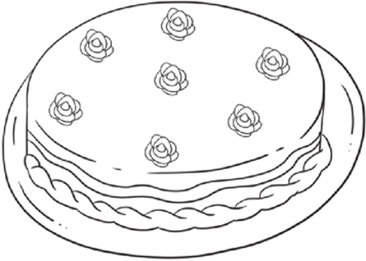
9.3个月饼平均分给4个人吃，怎么分呢？